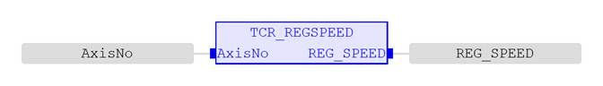
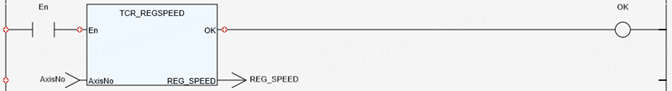

Axis Parameter.
Read the current value of axis parameter ‘REG_SPEED’ .
|
AxisNo : UINT; |
Specify axis number. |
|
REG_SPEED : LREAL; |
The speed of the axis in user units per millisecond at which the registration event occurred. |
Stores the speed of the axis when a registration mark was seen user units per millisecond. This parameter is used with the first (A) hardware registration channel, or Z mark only.
If the value of the input parameter ‘AxisNo’ is out of range, the value of ‘REG_SPEED’ is 0 and the return value of ‘TCR_ErrorID’ is 19.
(LREAL):=TCR_REGSPEED(AxisNo:= (UINT));

